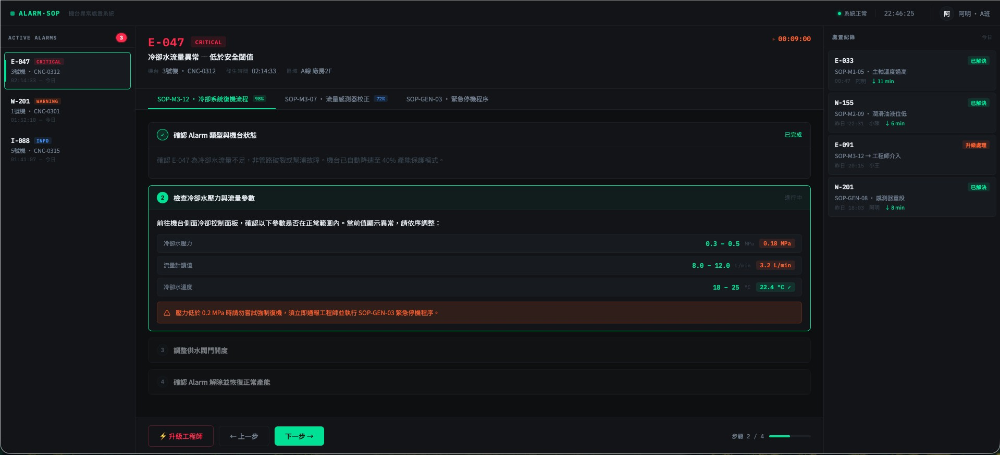

Product Manager × AI Agent · 2026
從「執行協調者」到「策略決策者」的行為轉變
Part 1
同樣的工作，AI 代理介入後，PM 的角色會有什麼不同？
🤖 用戶洞察代理 · 週一 09:00
本週用戶回饋摘要（共 284 則）
🤖 用戶洞察代理 · 建議行動
結帳問題出現頻率較上週 ↑ 38%，建議本 Sprint 優先排查 payment flow。已附相關用戶引言 →
FEATURE
一鍵重新訂購：讓用戶快速複製歷史訂單
USER STORY
身為回購用戶，我希望可以在訂單頁一鍵複製上次的購物清單，這樣我就不需要重新搜尋每個商品。
ACCEPTANCE CRITERIA
✓ 訂單頁顯示「再買一次」按鈕
✓ 點擊後商品加入購物車，缺貨品項標示提示
✓ 支援最近 6 個月訂單
⚠ AI 衝突偵測
與 Sprint 22「購物車重構」存在依賴關係，建議確認排期。

8/10
Story 完成
+2.3%
DAU 週增長
2
待解決風險
本週亮點
推薦功能上線，7 日留存率提升 4.1 個百分點，超出預期目標。
風險項目
結帳流程 Bug 修復延遲，影響 Sprint 25 排程
iOS 審核預計 5 天，需提前送審
Part 2
不是學新工具，而是換一種思維方式看待自己的工作。
Stop 停止
Start 開始
Keep 保留
PM 的工具版圖分散在 5 個以上的平台。MCP 是讓 AI Agent 能夠統一存取這些數據的「通用連接器」。
結果： AI 不再只看單一工具的片段，而是擁有完整的上下文，才能給出真正有用的洞察與行動建議。
過去的 PM 時間分配
大量時間消耗在可被自動化的執行工作上。
AI Agent 介入後
PM 的核心價值回到不可被取代的事情上。
每週可被自動化的 PM 例行工作
BEFORE
整理回饋 2h ＋ 寫 PRD 3h ＋ 製作週報 2h ＋ 看 dashboard 1h
AFTER
多進行 4 次深度用戶訪談，或完成 1 個策略提案，或花時間建立跨部門共識。
THIS WEEK
找出你每週最花時間的例行工作（整理、彙整、報告），今週用 AI Agent 跑一次看看結果。
NEXT WEEK
設定一個核心指標的異常通知（轉換率、錯誤率），讓 AI 主動告訴你，而不是你去找它。
THIS MONTH
下次需要寫需求文件，先讓 AI 生成第一版，你的工作從「從零寫」變成「從優化」。
AI 不會取代你。但會用 AI 的人，會。
討論
從一件事開始，而不是等到準備好。